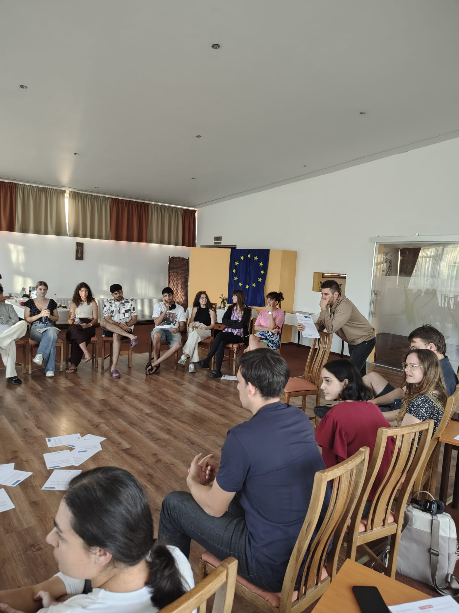
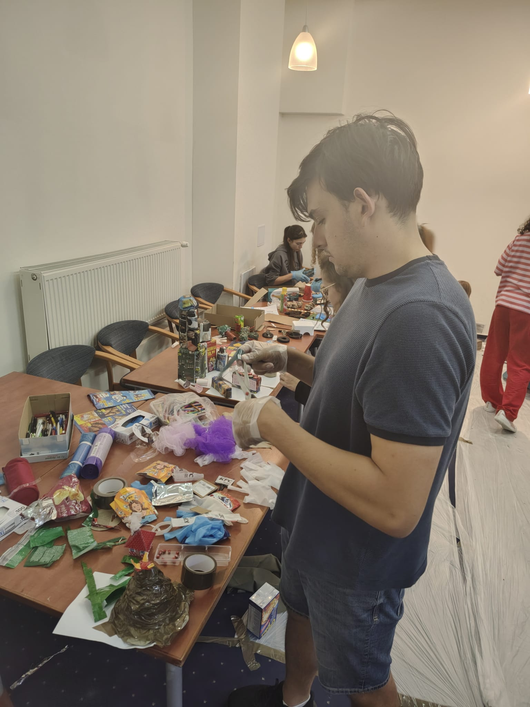
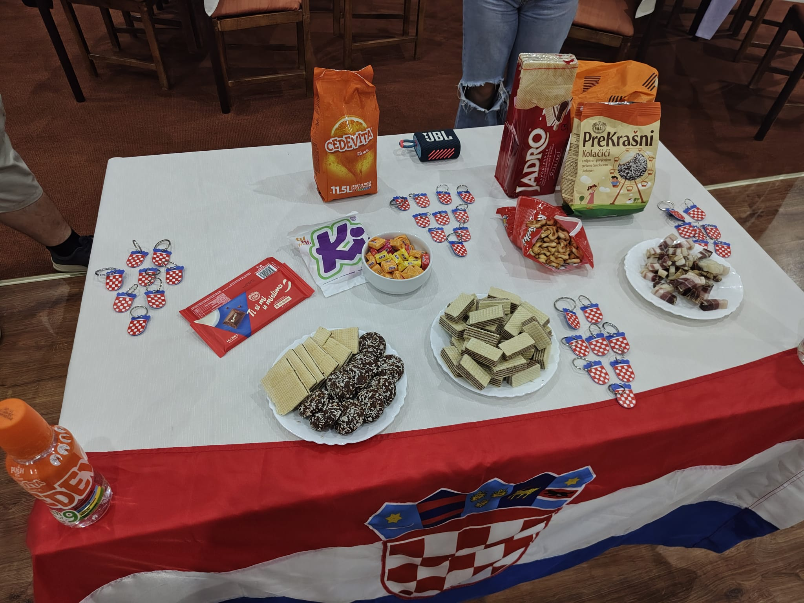
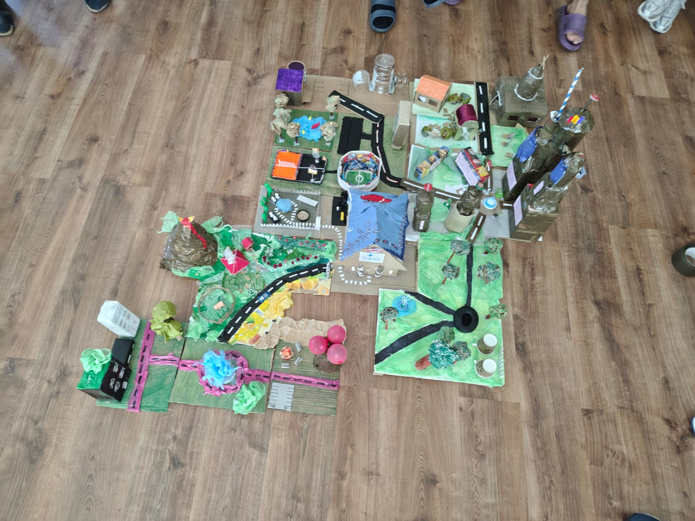
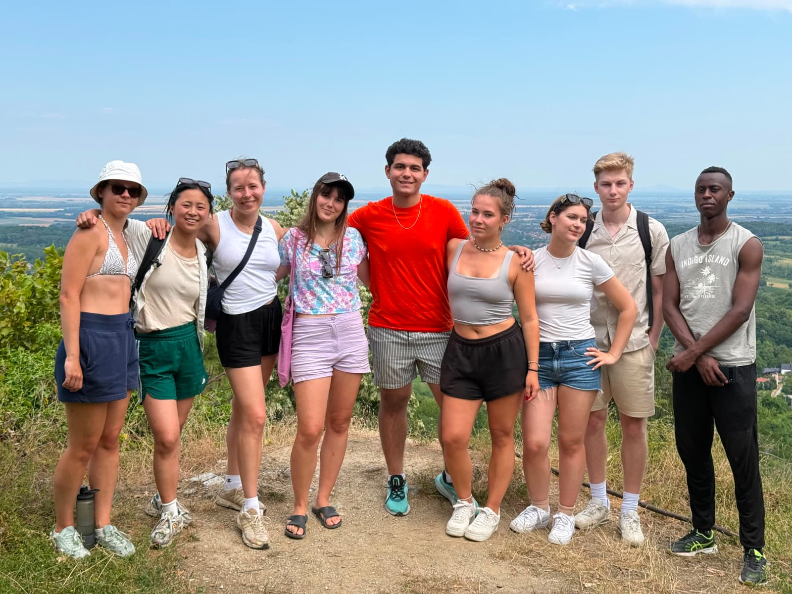

Mladá vlna · občianske združenie · Erasmus+
Toto niekto zahodil. Mladí ľudia z toho postavili mesto.
Mládežnícke výmeny po celej Európe. Zadarmo, pre každého od 13 do 30 rokov.
Posúvaj nadol
Foto: Hush Naidoo Jade Photography / Unsplash · ReToy, Košice 2025
O nás
Sme občianske združenie z východného Slovenska. Berieme mladých ľudí do Európy a Európu privážame do Košíc.
Cez program Erasmus+ vytvárame príležitosti pre mladých ľudí, študentov, pracovníkov s mládežou aj širokú verejnosť, aby sa zapojili do medzinárodných projektov, výmen a školení.
Veríme v silu vzdelávania a medzikultúrnej spolupráce. Z výmeny si odnesieš lepšiu angličtinu, nové zručnosti a priateľov naprieč Európou.
Výmena
Osem dní, deň po dni.
Výmena trvá osem až deväť dní. Každá je iná, ale takto zvyčajne plynie.
-
Príchod
Prichádzaš so svojím národným tímom. Ľudí z ostatných krajín ešte nepoznáš.

Populism 101 · Orahovica -
Ľady sa lámu
Zoznamovacie hry a tímové úlohy. Do večera poznáš mená a angličtina ide ľahšie, než si čakal.

ReToy · Košice -
Von, medzi ľudí
Program sa nedeje len v miestnosti. Na výmenách ReToy a The Masters of Puppets sme čistili okolie a z nazbieraného odpadu tvorili.

The Masters of Puppets · Rymanów -
Tvoríš
Bábky, model mesta, kampaň alebo simulácia. V medzinárodnom tíme vzniká niečo, čo ráno ešte neexistovalo.

ReToy · Košice -
Medzikultúrny večer
Každá krajina prinesie jedlo, hudbu a tance. Na tieto večery účastníci spomínajú najdlhšie.

ReToy · Košice -
Nové nástroje
3D tlač, umelá inteligencia, overovanie faktov. Skúšaš si veci, ku ktorým sa bežne nedostaneš.

ReToy · Košice -
Pre ľudí okolo
Výsledok nezostane v šuplíku. Hrali sme bábkové divadlo pre deti v škôlke a darovali hračky aj model mesta.

The Masters of Puppets · Rymanów -
Rozlúčka
Lúči sa ťažšie, než si čakal. Domov ideš s priateľmi z celej Európy a s odvahou ozvať sa.

Populism 101 · Orahovica
Projekty
Kam nás vlna zaniesla.
Momentálne nie je otvorená žiadna výzva. Sleduj náš Instagram.
Otázky
Na čo sa ľudia pýtajú najčastejšie.
Nie je to náhodou podvod?
Nie. Všetky projekty financuje program Erasmus+ pod dozorom Európskej komisie. Zoznam schválených projektov nájdeš na stránke Európskej komisie.
Koľko budem platiť?
Nič. Ubytovanie a stravu na mieste hradí grant Európskej únie. Cestovné sa do určitej výšky, podľa vzdialenosti, prepláca po skončení projektu, zvyčajne do jedného mesiaca.
Musím byť študent?
Nie. Na mládežnícku výmenu stačí vek 13 až 30 rokov, vedúci tímu môže byť starší. Na tréningový kurz stačí vek 18 a viac. Potvrdenie o štúdiu ani o zamestnaní netreba.
Neviem dobre po anglicky. Je to problém?
Vôbec nie. Cestuješ v národnom tíme, takže máš vždy pri sebe Slovákov, ktorí ti pomôžu prekladať aj vyjadriť sa. A angličtinu si precvičíš.
Ako sa prihlásim?
Vyplníš prihlasovací formulár pri projekte, ktorý ťa zaujíma. Po zvážení všetkých kandidátov sa ti ozveme.
Kde nájdem podrobnosti o projekte?
V takzvanom infopacku. Nájdeš ho na stránke každého projektu.